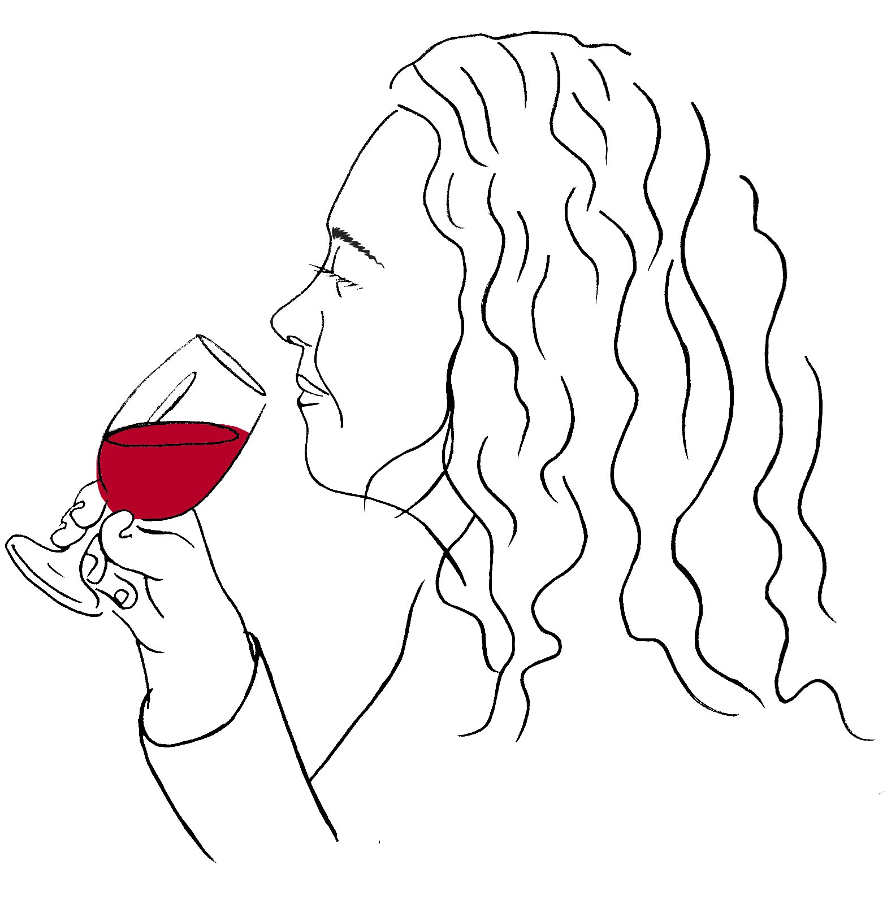

Comecei desde muito nova a ouvir falar da Lagoa, primeiro através dos meus avós, mais tarde através do meu pai, Carlos.
Fui crescendo e percebendo a razão da paixão que sentiam pela terra, a razão do entusiasmo pela vinha e o desejo de fazer sempre melhor. Percebi e aprendi que só com entusiasmo, persistência e muita dedicação se conseguem grandes feitos.
A minha paixão pela vinha nasceu de tudo isto. Deste convívio de gerações e de memórias felizes que tenho de cada vindima passada.
Carla Neto